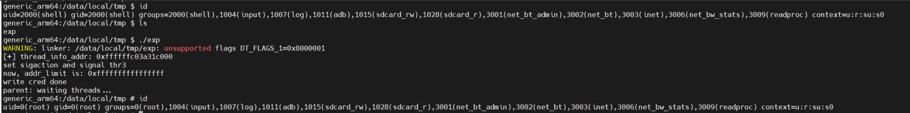

CVE-2014-3153 漏洞复现 - towelroot
影响版本： linux kernel 2.6.31 ~ 3.14.5
CVE信息：https://cve.mitre.org/cgi-bin/cvename.cgi?name=CVE-2014-3153
补丁信息：https://github.com/torvalds/linux/commit/e9c243a5a6de0be8e584c604d353412584b592f8
futex
关于futex，有许多介绍文章，如下：
linux-2.6.21 pi futex关键数据结构关系图及lock流程
这里只记录三点我认为对理解该漏洞有关的内容：
futex是linux kernel支持的一种机制，全称是 fast userspace mutex，这个机制使用户态可以使用内核的mutex，并且只有在发生竞争时才需要内核参与仲裁，提高了效率。
futex有两种类型：PI 和 non PI，PI futex的实现使基于内核的plist（a priority-sorted list）
requeue操作：将一个waiter转移到另一个futex锁的wait list中。non PI futex可以转到另一个PI futex或另一个non PI futex，但PI futex不允许执行requeue操作。
漏洞验证
首先，搭建漏洞复现和调试的环境，并验证poc
环境搭建
下载有漏洞的内核源码，两种方式任选其一：
下载最新的 android-goldfish-3.10源码，然后回滚到有漏洞的patch
1
2
3
4
5
6
7# linux kernel 3.10, aarch64
git clone https://android.googlesource.com/kernel/goldfish.git -b android-goldfish-3.10
cd goldfish
git checkout 5ccf7dfeea5b5e2e63a6d45e85335c788a69e7b2 kernel/futex.c
make ARCH=arm64 ranchu_defconfig
make ARCH=arm64 CROSS_COMPILE=/home/bling/Downloads/android-ndk-r12b/toolchains/aarch64-linux-android-4.9/prebuilt/linux-x86_64/bin/aarch64-linux-android- -j8根据漏洞文件 kernel/futex.c ，直接找到漏洞修复前的分支，下载对应的包即可
1
wget https://android.googlesource.com/kernel/goldfish/+archive/5ccf7dfeea5b5e2e63a6d45e85335c788a69e7b2.tar.gz
源码下载到本地后，内核编译及启动可参考我之前的文章：android 模拟器 goldfish 环境搭建
poc验证
在执行poc之前，我们先简单了解下该漏洞。漏洞出在 linux 的系统调用 futex 的实现中，对应的内核处理函数入口是 do_futex() ：
1 | long do_futex(u32 __user *uaddr, int op, u32 val, ktime_t *timeout, |
漏洞的触发过程较复杂，需要通过以上三个 case 分支搭配产生，共分为如下五个步骤：
FUTEX_LOCK_PI：
futex_lock_pi( pi_futex, flags, 0, 0, 0);（父进程）首先，获取 pi_futex 锁，让其他进程或线程需要获取这个锁时只能等待，为第三步做准备。
FUTEX_WAIT_REQUEUE_PI：
futex_wait_requeue_pi( non_pi_futex, flags, 0, 0, 0, pi_futex);（子进程）获取 non_pi_futex 锁，并指定 pi_futex 作为将要 requeue 的目标。该过程在 futex_wait_queue_me() 函数处陷入等待，待成功获取pi_futex锁后被唤醒，然后根据被唤醒的条件进入不同的处理分支。
FUTEX_CMP_REQUEUE_PI：
futex_requeue(non_pi_futex, flags, pi_futex, 1, 1, &val3, 1);（父进程）将发起 requeue 操作的进程其数据（rt_waiter）链接到 pi_futex 的等待队列中去，这样当 pi_futex 可用时，可以准确唤醒目标进程
*pi_futex = 0;（父进程）将用户态 pi_futex 中的值手动置为0，表示此时 pi_futex 处于可用状态
FUTEX_CMP_REQUEUE_PI：
futex_requeue(pi_futex, flags, pi_futex, 1, 1, &val3, 1);（父进程）此时制造一个 self-requeue，获取 pi_futex 锁会成功，于是唤醒 step2 中等待的进程。
如此被唤醒的step2子进程，会以为是第三步执行时获取到了 pi_futex 锁，于是进入对应的处理分支继续执行，直到子进程退出时，才发现异常，引发内核崩溃。
完整poc代码如下：
1 |
|
aarch64 架构的 android 虚拟机运行结果

根据打印信息，可知是子进程结束时调用 do_exit() 函数触发的崩溃。内核尝试通过 mm_release() 来清理进程的资源，发现 pi_state_list 链表非空，于是调用 exit_pi_state_list() 函数来处理。在该函数中调用 rt_mutex_unlock() 来释放该进程对futex锁的占用，并唤醒等待该futex锁的top_waiter，于是触发崩溃。
根据 BUG 信息，报 BUG 的位置在 rt_mutex_top_waiter() 函数中：
1 | static inline struct rt_mutex_waiter * |
在漏洞分析章节，我们会知道：lock 是一个 futex 锁对应的内核对象，等待该futex锁的线程会被链接到该对象的 wait_list 中。w 这个数据结构代表一个等待的子线程，它指向子线程的一段内核栈空间。正常情况下 w->lock == lock ，然而漏洞的存在，加上精心构造的poc，可以使 w 所在的内核栈空间已被其他数据覆盖的情况下，进程仍然会执行到以上代码片段，此时w->lock != lock ，于是出现BUG。
有意思的是，我觉得这应该算一个UAF？只不过使用的不是堆块，而是内核栈。
漏洞分析
先抽象地说明一下我对这个漏洞的理解。
漏洞产生的根本原因，在于 futex_requeue() 函数中未考虑 uaddr 和 uaddr2 相等的情况，导致可以通过self_requeue的方式，给另一进程制造成功获得该futex锁的假象。于是，另一进程继续执行，访问到非法数据，触发bug导致内核崩溃。
如何理解给另一进程制造了成功获得该futex锁的假象？
在 futex_requeue() 中，利用self_requeue，可以将另一个进程/线程的futex_q->rt_waiter成员置空，并唤醒另一进程/线程（路径：futex_requeue() -> futex_proxy_trylock_atomic() -> requeue_pi_wake_futex() ）。这条路径，在被唤醒的进程看来，以为是requeue过程中获得锁的操作执行成功了，自己（rt_waiter）未被加入等待队列。于是更改futex_pi_state的内容，并设置当前进程的pi_state_list等等（futex_wait_requeue_pi() -> fixup_pi_state_owner()）。
另一进程继续执行过程中，如何访问的非法数据？
以poc为例，前几步的操作使得futex_pi_state->rt_mutex->wait_list 链接着一个子进程内核栈上的数据结构rt_waiter（内核栈已覆盖使用），由于子进程（对应上文中的另一进程）的pi_state_list非空，所以子进程在退出时会处理futex_pi_state->rt_mutex->wait_list 链表中的对象。而此时链表中的对象其数据已被覆盖（rt_waiter），于是在 rt_mutex_top_waiter() 触发BUG，导致内核崩溃。
关键结构体
先熟悉一下漏洞涉及的几个重要结构体
1 | /* |
代码分析
分析poc的每一个步骤背后，各个关键结构体的变化。
FUTEX_LOCK_PI（父）
- 步骤1：获取一个pi_futex
1 | static int futex_lock_pi(u32 __user *uaddr, unsigned int flags, int detect, |
FUTEX_WAIT_REQUEUE_PI（子）
步骤2 ：发起一个non_pi_futex到pi_futex的requeue操作，等待拥有pi_futex的进程响应。该步骤中途会进入睡眠，等待pi_futex可用时被唤醒。
该步骤，在栈上初始化了一个非常重要的结构体struct rt_mutex_waiter rt_waiter，这个rt_waiter在步骤3中被加入到pi_futex的waiter中，却由于步骤4和5的操作未及时将其从pi_futex的waiter中摘下，导致子进程退出时引发崩溃。
1 | static int futex_wait_requeue_pi(u32 __user *uaddr, unsigned int flags, |
FUTEX_CMP_REQUEUE_PI（父）
这个分支会被执行两次，一次是正常的流程（步骤3），一次是漏洞触发的流程（步骤4，步骤5）。
步骤3：将子进程对non_pi_futex的等待转换成对pi_futex的等待，如果在该函数中成功获取到pi_futex则直接唤醒子进程。如果未成功获取到pi_futex，则将子进程作为一个waiter链接到父进程（pi_futex）的futex_pi_state中。
由于第1步的存在，获取pi_futex失败，于是将子进程的
struct rt_mutex_waiter rt_waiter链接到父进程的struct futex_pi_state pi_state中，即在pi_futex的等待队列中添加了一个waiter。1
2
3
4
5
6
7
8
9
10
11
12
13
14
15
16
17
18
19
20
21
22
23
24
25
26
27
28
29
30
31
32
33
34
35
36
37
38
39
40
41
42
43
44
45
46
47
48
49
50
51
52
53
54
55
56
57
58
59
60
61
62
63
64
65
66
67
68
69
70
71
72
73
74
75
76
77
78
79
80
81
82
83
84
85
86
87
88static int futex_requeue(u32 __user *uaddr1, unsigned int flags,
u32 __user *uaddr2, int nr_wake, int nr_requeue,
u32 *cmpval, int requeue_pi)
{
union futex_key key1 = FUTEX_KEY_INIT, key2 = FUTEX_KEY_INIT;
int drop_count = 0, task_count = 0, ret;
struct futex_pi_state *pi_state = NULL;
struct futex_hash_bucket *hb1, *hb2;
struct plist_head *head1;
struct futex_q *this, *next;
u32 curval2;
/* requeue_pi需要使用pi_state（current->pi_state_cache） */
if (requeue_pi) {
if (refill_pi_state_cache())
return -ENOMEM;
if (nr_wake != 1)
return -EINVAL;
}
retry:
/* ... */
/* 获取 non_pi_futex 和 pi_futex 各自对应的key和hb */
ret = get_futex_key(uaddr1, flags & FLAGS_SHARED, &key1, VERIFY_READ);
if (unlikely(ret != 0))
goto out;
ret = get_futex_key(uaddr2, flags & FLAGS_SHARED, &key2,
requeue_pi ? VERIFY_WRITE : VERIFY_READ);
if (unlikely(ret != 0))
goto out_put_key1;
hb1 = hash_futex(&key1);
hb2 = hash_futex(&key2);
retry_private:
double_lock_hb(hb1, hb2);
if (likely(cmpval != NULL)) {
u32 curval;
ret = get_futex_value_locked(&curval, uaddr1);
/* ... */
/* 确保non_pi_futex没有被占用 */
if (curval != *cmpval) {
ret = -EAGAIN;
goto out_unlock;
}
}
if (requeue_pi && (task_count - nr_wake < nr_requeue)) {
/* 尝试获取uaddr2处的锁（pi_futex）：成功返回1。未获取到锁，需获取pi_futex对应的pi_state，返回0。
未获取到锁的情况下，将父进程current->pi_state_cache用作pi_state，
链接到父进程（持有pi_futex的进程）的p->pi_state_list上，并清空current->pi_state_cache */
ret = futex_proxy_trylock_atomic(uaddr2, hb1, hb2, &key1,
&key2, &pi_state, nr_requeue);
/* poc中这一步会返回0 */
/* ... */
switch (ret) {
case 0:
break;
/* ... */
}
}
head1 = &hb1->chain;
plist_for_each_entry_safe(this, next, head1, list) {
/* ... */
/* 找到发起requeue操作进程（子进程/non_pi_futex）对应的struct futex_q，命名为this */
if (requeue_pi) {
/* ... */
this->pi_state = pi_state;
/* 将non_pi_futex的 struct rt_mutex_waiter（this->rt_waiter->list_entry）
链接到pi_futex对应的struct futex_pi_state（pi_state->pi_mutex->wait_list）上 */
ret = rt_mutex_start_proxy_lock(&pi_state->pi_mutex,
this->rt_waiter,
this->task, 1);
/* poc中这里返回0 */
/* ... */
}
/* ... */
}
/* ... */
out:
if (pi_state != NULL)
free_pi_state(pi_state);
return ret ? ret : task_count;
}步骤4：将用户态 pi_futex中的值置为0，使得下一步获取锁时可以成功。
*pi_futex = 0;步骤5：由于漏洞的存在+步骤4的设置，self-requeue过程中会成功获取到pi_futex锁，于是清除子进程在等待队列的标记（但未删除等待队列链表wait_list），并唤醒步骤2的子进程。
该过程中，将子进程中标记rt_waiter存在的q->rt_waiter置为空，意味着第3步在pi_futex下添加的waiter将被子进程忽略，这是子进程引发后续崩溃的原因。
1
2
3
4
5
6
7
8
9
10
11
12
13
14
15
16
17
18
19
20
21
22
23
24
25
26
27
28
29
30
31
32
33
34
35
36
37
38
39
40
41
42
43
44
45
46
47
48
49
50
51
52
53
54
55
56static int futex_requeue(u32 __user *uaddr1, unsigned int flags,
u32 __user *uaddr2, int nr_wake, int nr_requeue,
u32 *cmpval, int requeue_pi)
{
union futex_key key1 = FUTEX_KEY_INIT, key2 = FUTEX_KEY_INIT;
int drop_count = 0, task_count = 0, ret;
struct futex_pi_state *pi_state = NULL;
struct futex_hash_bucket *hb1, *hb2;
struct plist_head *head1;
struct futex_q *this, *next;
u32 curval2;
if (requeue_pi) {
if (refill_pi_state_cache())
return -ENOMEM;
if (nr_wake != 1)
return -EINVAL;
}
/* 未检查uaddr1==uaddr2的情况！！！ */
retry:
/* ... */
ret = get_futex_key(uaddr1, flags & FLAGS_SHARED, &key1, VERIFY_READ);
if (unlikely(ret != 0))
goto out;
ret = get_futex_key(uaddr2, flags & FLAGS_SHARED, &key2,
requeue_pi ? VERIFY_WRITE : VERIFY_READ);
if (unlikely(ret != 0))
goto out_put_key1;
hb1 = hash_futex(&key1);
hb2 = hash_futex(&key2);
retry_private:
double_lock_hb(hb1, hb2);
if (likely(cmpval != NULL)) {
u32 curval;
ret = get_futex_value_locked(&curval, uaddr1);
/* 这里检查 uaddr1 对应的futex是否被占用*/
if (curval != *cmpval) {
ret = -EAGAIN;
goto out_unlock;
}
}
if (requeue_pi && (task_count - nr_wake < nr_requeue)) {
/* 这里获取锁成功，在函数中会将hb1中key1对应的futex_q其q->rt_waiter置为空，并唤醒步骤2的进程 */
ret = futex_proxy_trylock_atomic(uaddr2, hb1, hb2, &key1,
&key2, &pi_state, nr_requeue);
/* ... */
out:
if (pi_state != NULL)
free_pi_state(pi_state);
return ret ? ret : task_count;
}
关键点提炼
rt_waiter 何时产生？何时入链？
rt_waiter的产生（步骤2）：本质就是一个内核栈变量
1 | static int futex_wait_requeue_pi(u32 __user *uaddr, unsigned int flags, |
rt_waiter入链（步骤3）：
1 | // 调用路径：futex_requeue() --> rt_mutex_start_proxy_lock() --> task_blocks_on_rt_mutex() |
rt_waiter跟子进程的链接？
（步骤2被唤醒后）rt_waiter原本不应该跟子进程有链接，但是由于漏洞的存在，导致rt_waiter通过pi_futex的pi_state跟子进程之间有了链接
1 | static int futex_wait_requeue_pi(u32 __user *uaddr, unsigned int flags, |
q.rt_waiter何时被置空
（步骤5）成功获取到pi_futex锁后，会将子进程q.rt_waiter置空
1 | // 调用路径：futex_requeue() --> futex_proxy_trylock_atomic() --> requeue_pi_wake_futex() |
漏洞利用
用子线程（pthread_create()）替代poc中的子进程（fork()）
利用思路：
如何写dangling rt_waiter：在子线程中已经有了一个dangling rt_waiter，如何覆写其中的内容呢？在对应子线程中调用合适的syscall，如 sendmsg, sendmmsg, recvmsg, recvmmsg 等，根据各函数的内核栈深度来选择。
往dangling rt_waiter中写什么：rt_waiter本质是一个双向链表，弄清楚这个链表的操作原理，通过合理更改链表节点的值，可以获得 ”信息泄露“ 和 ”任意地址写值“ 的能力。主要看
plist_add()函数。在子线程中改掉父进程的cred。从当前线程的 task_struct 开始，有两个路径：
- task_struct → group_leader →cred
- task_struct → cred
调试发现它们俩指向的是同一个 cred 。也就是说子线程的场景下，只要改掉一个cred，父进程和所有其他子线程都完成了提权
有了以上能力后，还有个坑点，由于dangling rt_waiter对应的子线程需要卡在 sendmsg 或 recvmsg 的过程中，不能返回用户态（返回的话，栈中数据就没了，而且还会导致内核崩溃）。所以，即使泄露了对应子线程的栈地址，并且扩大 addr_limit 的访问范围，但接下来如何让子线程安全地继续执行一段代码，给自己或父进程提权呢？我们可以通过 sigaction() 为 SIGINT 注册一个处理函数（只需在主进程中注册，所有子线程都会自动同步注册），然后通过 pthread_kill() 给目标子线程发送 SIGINT 信号，最后目标子线程就会执行我们需要的代码，还不会造成崩溃。
完整exp
1 |
|
拿到root_shell，有一定概率会失败。失败的原因，可能是因为往addr_limit写的栈地址，小于addr_limit的地址。这个问题无法避免。

计算函数内核栈的深度
内核源码工具：scripts/checkstack.pl
使用方法：
1 | objdump -d vmlinux | ./scripts/checkstack.pl i386 | grep xxx |
注意：对于 android 内核文件，需要使用 arm 版本的 objdump
ps. 在复写内核栈时，通常可考虑使用recvmsg/ recvmmsg， sendmsg/ sendmmsg 等函数。用户态可以控制 iov 的个数，不需要填满8个，以免覆盖到栈中残留的其他重要数据
本CVE利用过程中，recvmmsg接收参数设置满8个iov，则如下代码第二行会 BUG。后来改成 2个 iov， 就能执行通过了。
1 | if (rt_mutex_has_waiters(lock)) |
参考文章
Exploiting CVE-2014-3153 (Towelroot) ：这篇文章写的极好
CVE-2014-3153 Exploit ：作者在x86架构上完成了这个漏洞的利用，一开始想通过劫持 ptmx_fops→release 函数指针，进而执行 commit_creds(prepare_kernel_cred(0)) 完成提权，但是由于 SMEP 的存在未能成功。所以，后来决定通过改 addr_limit 实现用户态对内核任意地址读写来提权，但是未公开exp。
cve2014-3153 漏洞之详细分析与利用：比较仔细地一篇文章，但实在是太长了，只看了前面一点点
一些其他的exp：